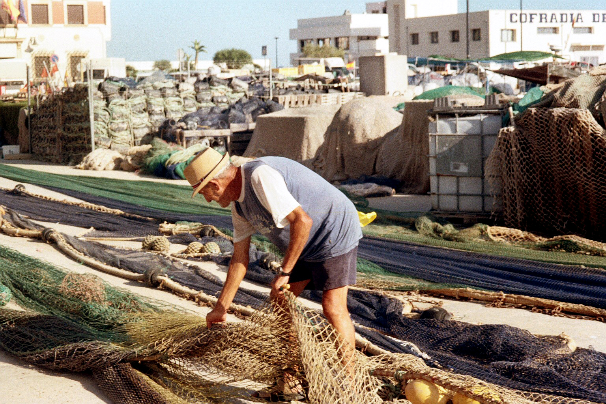
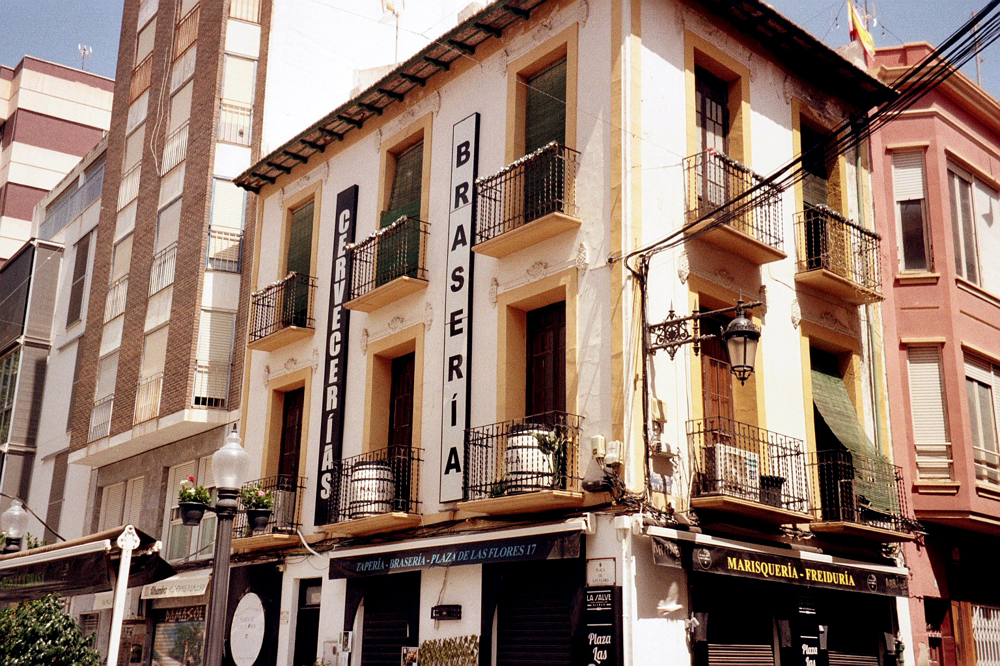
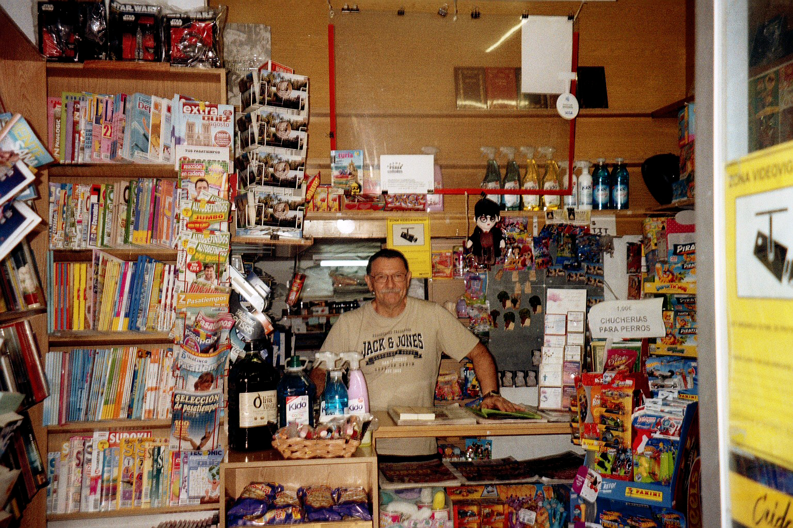
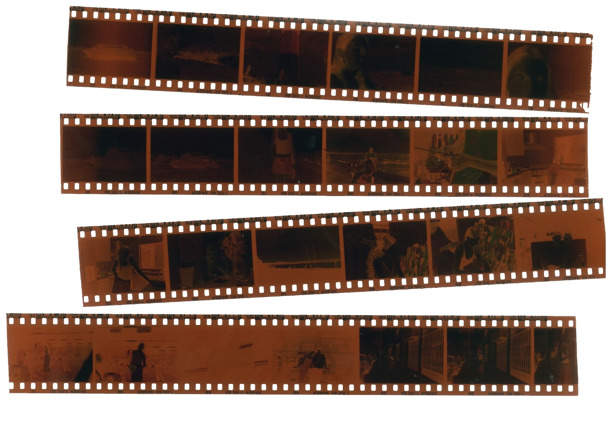

analógicas24
Selección de una serie fotográfica compuesta por analógicas, realizadas a lo largo del año 2024 con una cámara Olympus Superzoom 80G de 135 mm.




Negativos escaneados de algunas de las fotos mostradas en el álbum, los cuales son de la marca Kodak con un ISO 100. Reveladas en Fotoman, Elche.